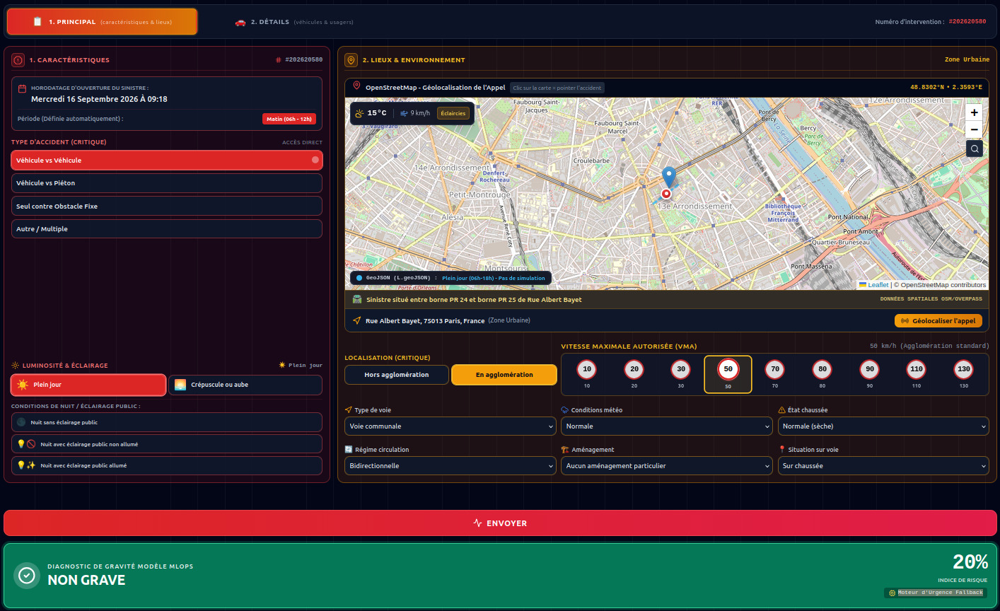

Se connecter
React obtient un JWT login.
Deux écrans React, puis un proxy Express qui distingue prédiction distante et secours heuristique.
React obtient un JWT login.
Écrans Principal et Détails.
POST /api/predict au proxy Express avec Bearer JWT.
Predict API ou secours heuristique.
GRAVE / NON GRAVE, risque et badge.

Vérifier la version du modèle servi lors de la démonstration.
La capture illustre ce mode, pas une inférence par le champion.